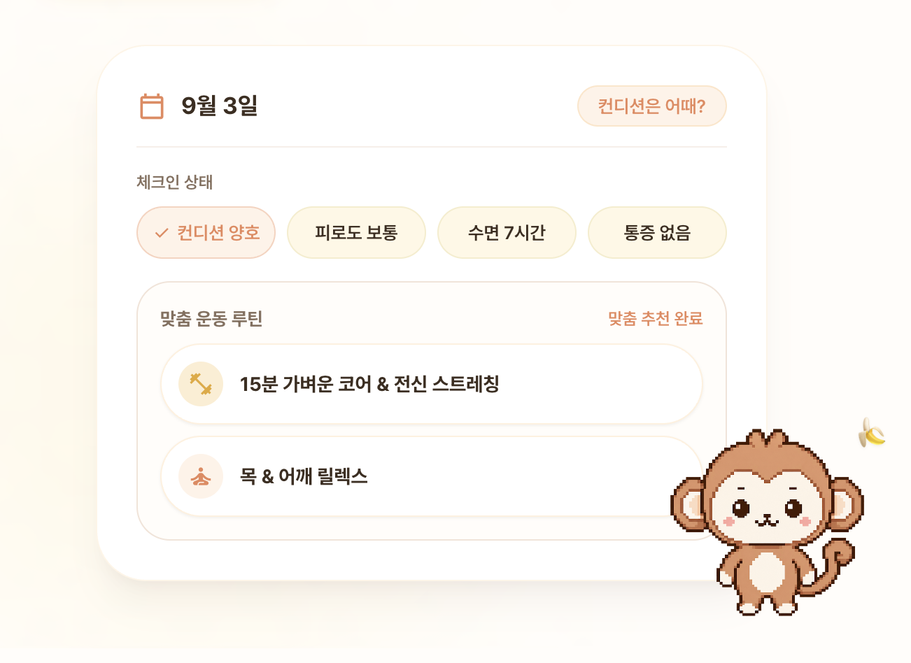
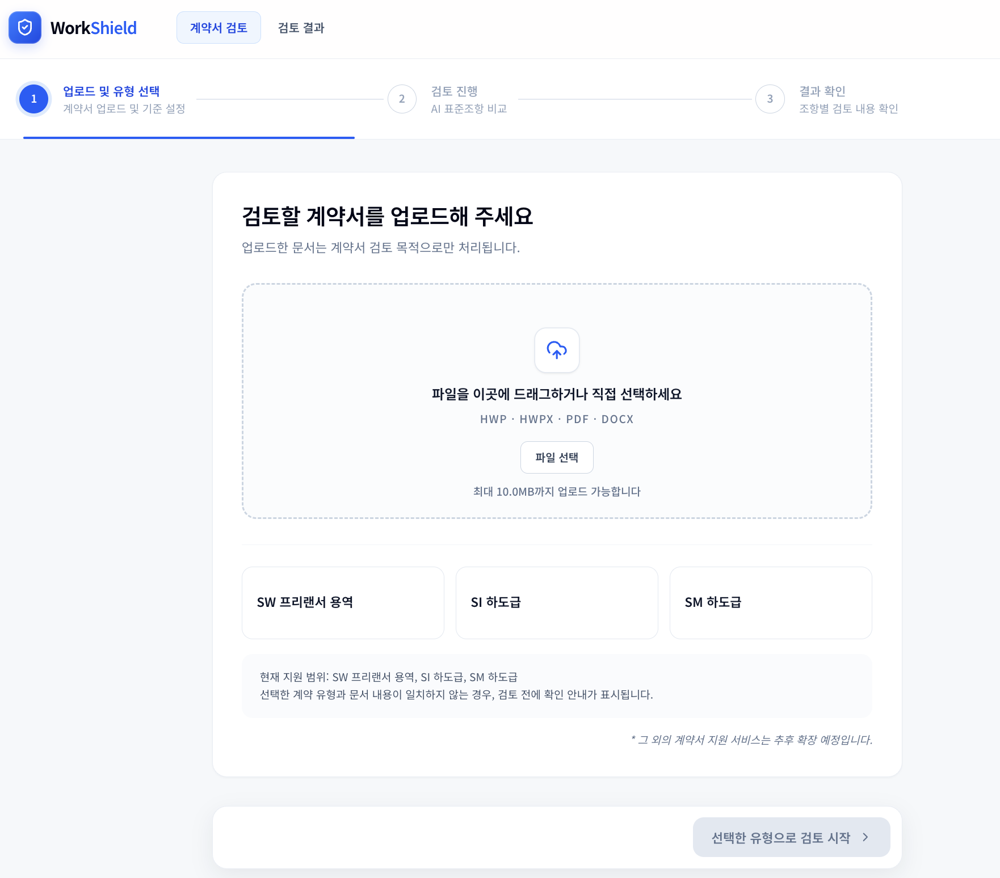
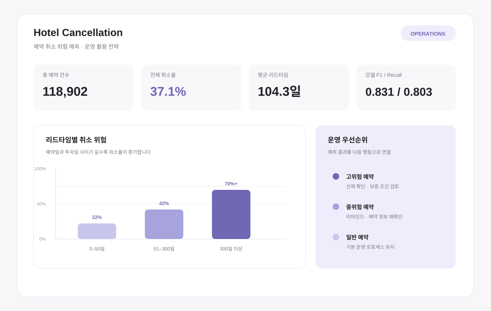

TEAM PROJECTS
조사와 데이터에서 출발해, 사용자의 다음 행동을 설계한 팀 프로젝트입니다
AI Healthcare / Team Project
사용자 맞춤형 AI 운동 서비스
사용자 조사 · 기능 기획 · 안전 정책 설계 · PM

AI Document / Team Project
표준계약서 기반 AI 계약 검토 서비스
타깃 설정 · MVP 범위 · 요구사항 및 서비스 정책 설계 · PM

Data & Machine Learning / Team Project
호텔 예약 취소 예측 및 운영 전략 제안
데이터 분석 · 문제 정의 · 운영 전략 · PM
